Novinky
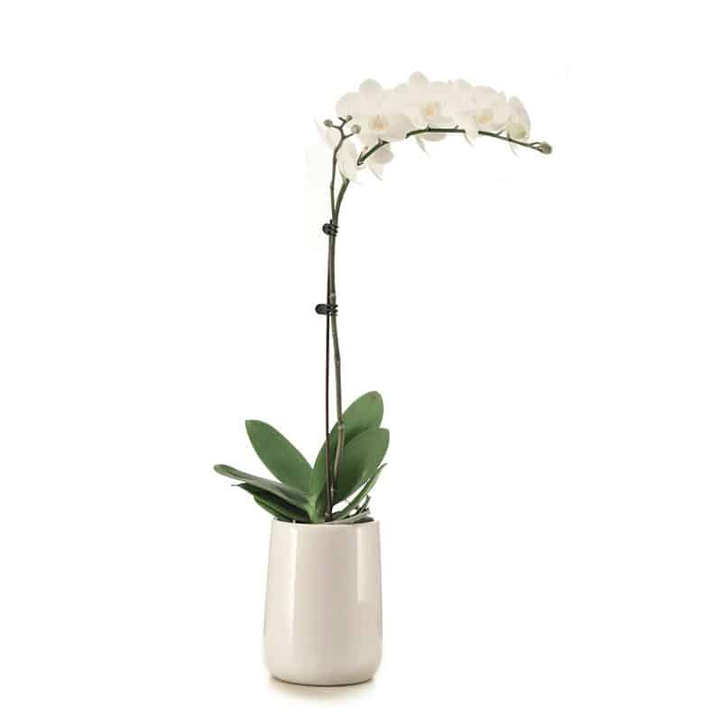
Orchideje
Jednoduchá bílá Phalaenopsis – bílý keramický květináč
Nádherná, ručně vybraná rostlina bílé orchideje
Phalaenopsis, vystavená v elegantním bílém
keramickém květináči. K dispozici v luxusní,
zdobené verzi, jak je uvedeno na obrázku,
zahrnující doplňující sukulenty a větvičky, nebo
v jednodušší a zmenšené verzi.
Adolph Midler
Flowerist
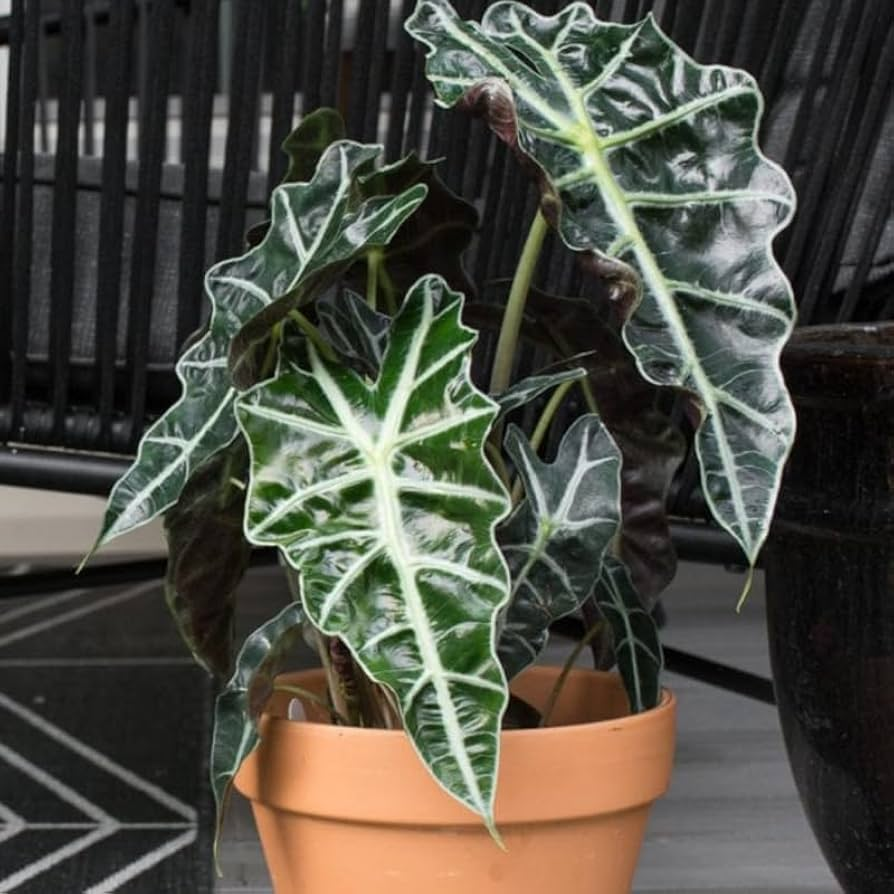
Rostliny v květináčích
Alocasia
Alocasia, známá také jako „Sloní ucho,“ má
velké, nádherně vzorované listy, které vytvářejí
výrazný dekorativní dojem. Tato rostlina je také
označována jako „strom, který roste až do nebes“
a symbolizuje schopnost chopit se příležitostí,
i když jsou riskantní. Ideální dárek pro
domácnost nebo kancelářské prostory.
Leo Pepsi
Flowerist
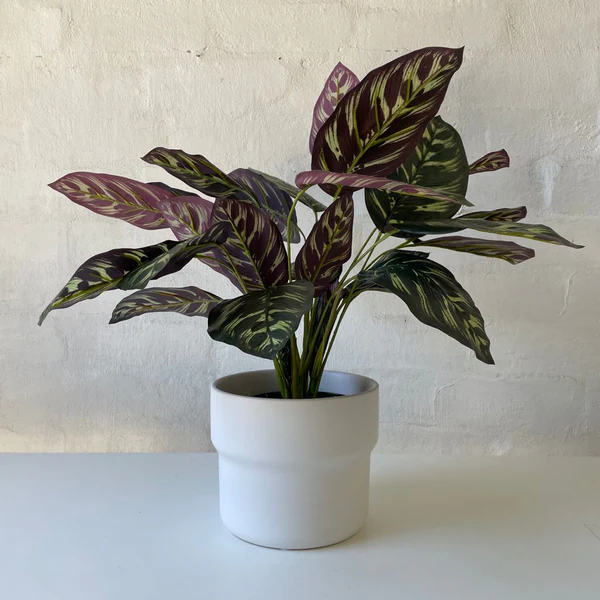
Rostliny vhodné pro začátečníky
Calathea
Rostlina Calathea se v češtině nazývá Kalatea.
Je to oblíbená pokojová rostlina známá pro své
výrazné a dekorativní listy s unikátními vzory.
Kalatey jsou původem z tropických oblastí Jižní
Ameriky a vyžadují specifické podmínky, jako je
vysoká vlhkost a nepřímé světlo, aby se jim
dařilo.
Mila Malikova
Flowerist
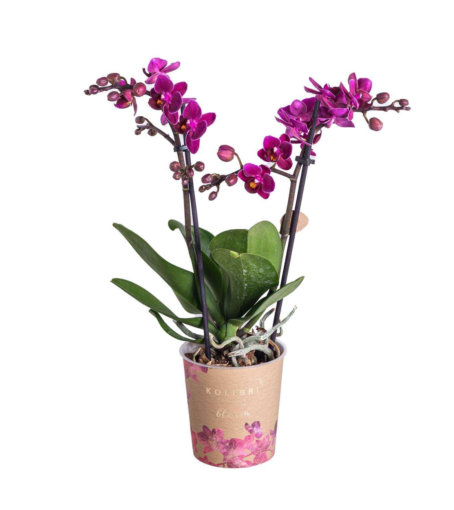
Orchideje
Fialová orchidej Phalaenopsis.
Fialová orchidej Phalaenopsis, známá také jako
můrovec, je elegantní pokojová rostlina ceněná
pro své nádherné květy v odstínech fialové. Tyto
orchideje jsou nenáročné na péči a jsou ideální
volbou pro začátečníky i zkušené pěstitele.
Mila Malikova
Flowerist
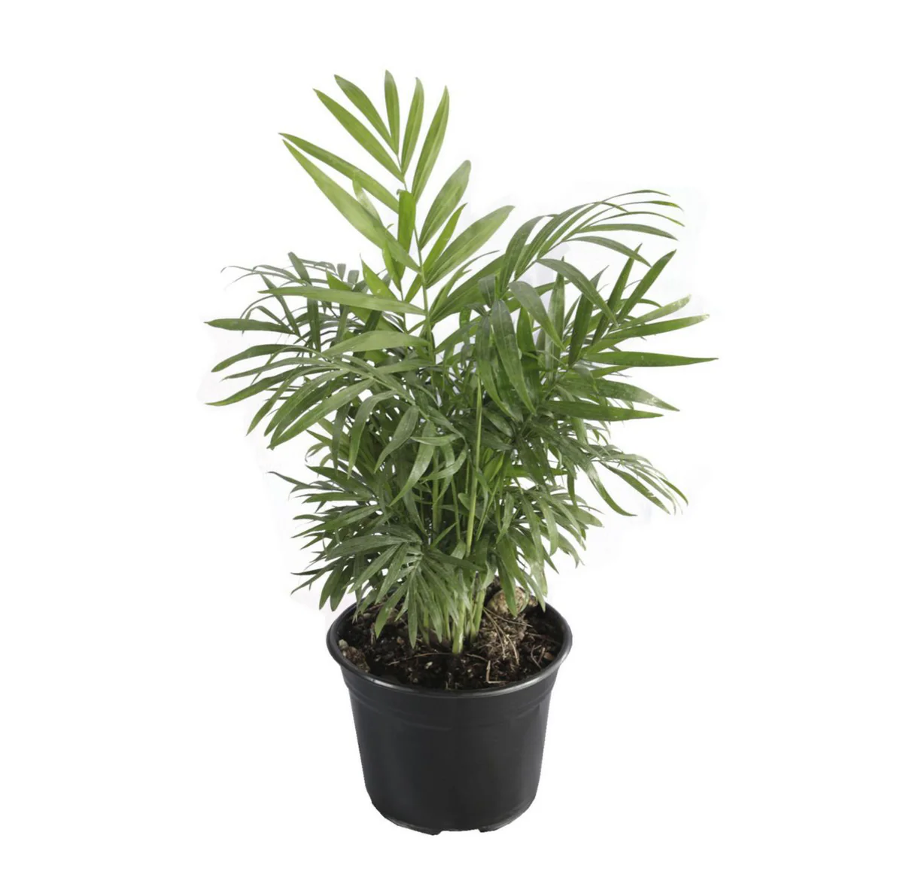
Palmy
Vysoká palma
Vysoká palma je majestátní rostlina, která
přináší tropický nádech do jakéhokoliv prostoru.
S dlouhým štíhlým kmenem a elegantními
vějířovitými nebo peříčkovitými listy vytváří
přirozenou atmosféru klidu a exotiky.
Adolph Midler
Flowerist
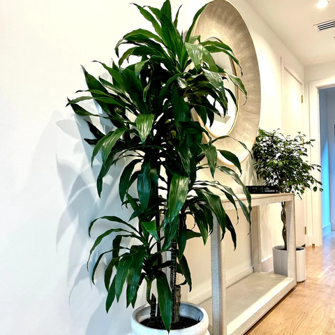
Rostliny odolné vůči nízkému světlu
Malá Dracaena Lisa
Malá Dracaena Lisa je elegantní pokojová
rostlina s úzkými, lesklými, tmavě zelenými
listy, které vyrůstají na štíhlém stonku. Díky
svému kompaktnímu vzrůstu je ideální pro menší
prostory, jako jsou kancelářské stoly, regály
nebo menší místnosti.
Leo Pepsi
Flowerist
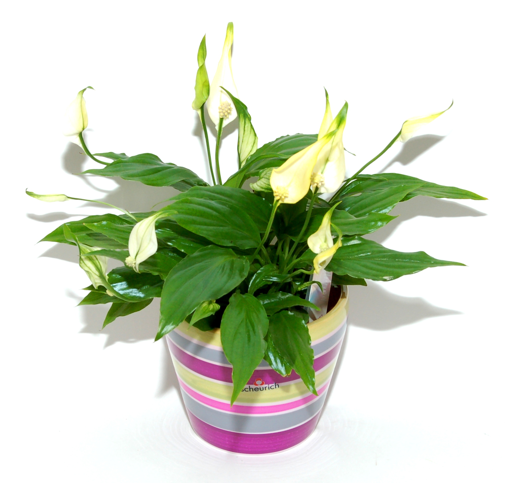
Rostliny odolné vůči nízkému světlu
Lopatkovec
Lopatkovec, známý také jako Peace Lily, je
oblíbená pokojová rostlina, která přináší
harmonii a klid do jakéhokoliv interiéru. V
košíku působí ještě dekorativněji a je ideální
jako dárek nebo doplněk domova. Lopatkovec má
krásné, lesklé zelené listy a elegantní bílé
květy, které připomínají plamínek míru.
Mila Malikova
Flowerist
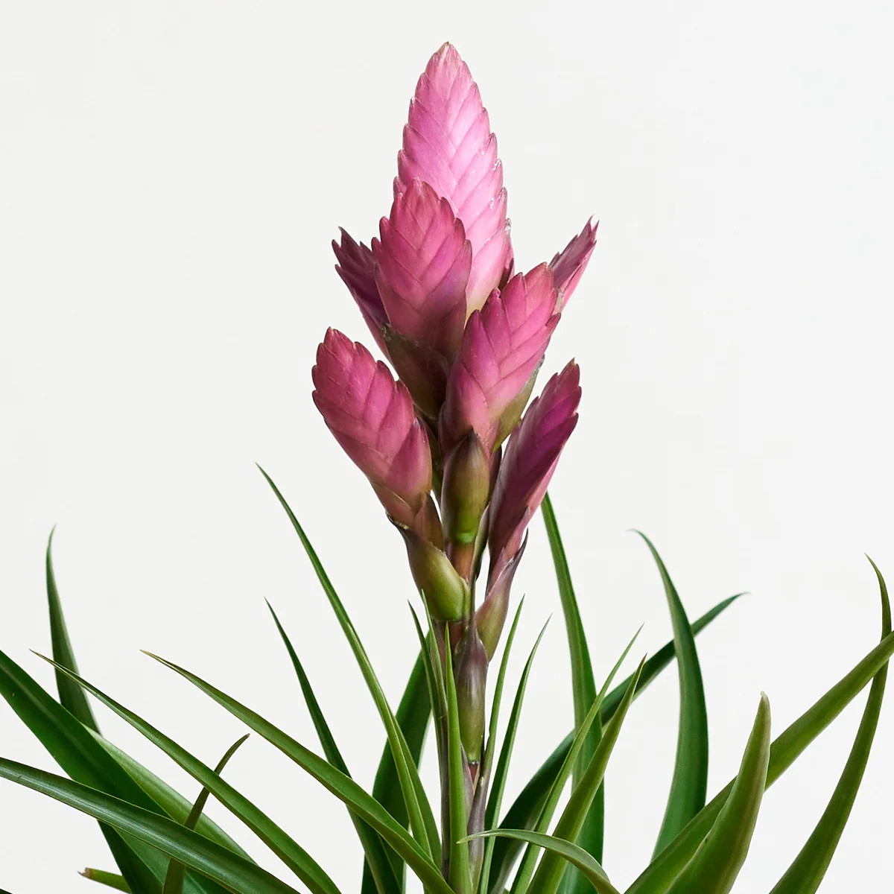
Exotické rostliny
Fialová bromélie
Fialová bromélie je exotická a poutavá rostlina,
která se pyšní nádhernými fialovými květy a
dekorativními listy uspořádanými do růžic.
Umístěná v elegantním bílém keramickém květináči
působí moderně a vkusně, což z ní činí ideální
doplněk do interiéru.
Mila Malikova
Flowerist
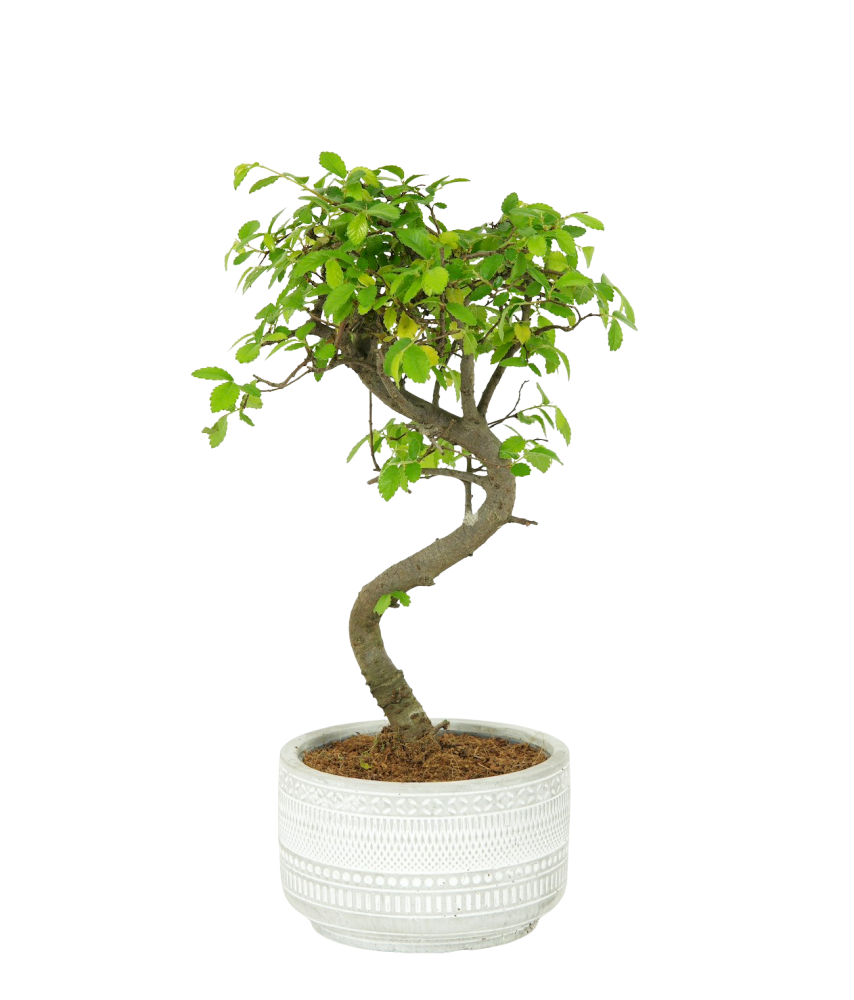
Pokojové rostliny
Ulmus parvifolia Bonsai
Ulmus parvifolia, známý také jako čínský jilm,
je oblíbený bonsajový strom ceněný pro své
drobné, oválné listy a přirozeně elegantní
vzhled. Tento bonsaj má jemnou, hustou korunu a
nádhernou texturu kůry, která se s věkem stává
zajímavě šupinatou a dodává stromku charakter.
Je ideální pro pěstitele bonsají všech úrovní,
protože je odolný a přizpůsobivý.
Adolph Midler
Flowerist
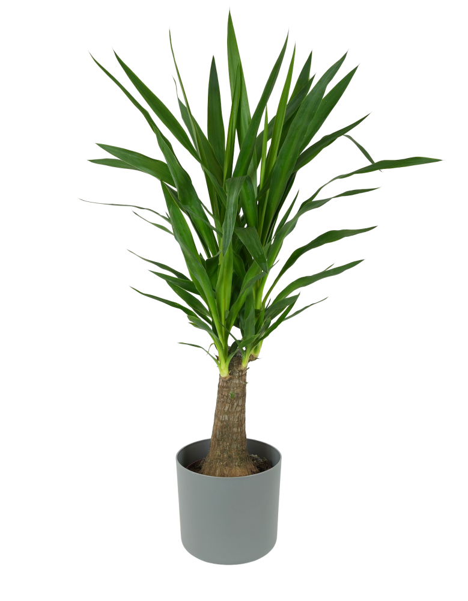
Pokojové rostliny
Yucca elephantipes
Yucca elephantipes, známá také jako juka
obrovská nebo juka beztrnná, je odolná a
nenáročná pokojová rostlina s výrazným exotickým
vzhledem. Tato juka s průměrem květináče Ø19 cm
má robustní kmen a dlouhé, špičaté, sytě zelené
listy, které vytvářejí moderní a architektonický
efekt.
Leo Pepsi
Flowerist
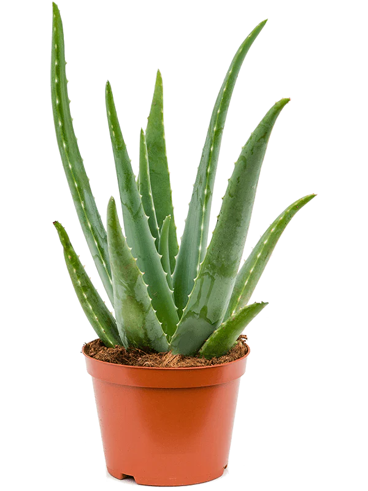
Pokojové rostliny
Aloe deltoideodonta
Aloe deltoideodonta je jedinečná sukulentní
rostlina pocházející z Madagaskaru, známá svými
trojúhelníkovitými listy uspořádanými do růžice.
Listy jsou masité, zelené až modrozelené, často
s jemnými skvrnami a drobnými zuby na okrajích.
Mila Malikova
Flowerist
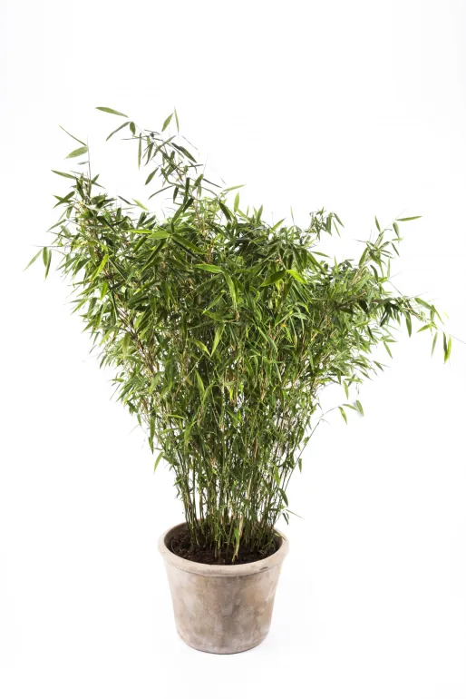
Pokojové rostliny
Bambus
Bambus je rychle rostoucí a nenáročná rostlina
známá pro své štíhlé, elegantní stonky a svěží
zelené listy. Je symbolem štěstí, odolnosti a
harmonie, což z něj činí oblíbený doplněk do
domácností a kanceláří. Bambus může být pěstován
jako dekorativní rostlina v květináči nebo
hydroponicky ve vodě.
Leo Pepsi
Flowerist